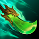
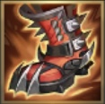

起手組件
 長劍
長劍提高手裏劍與影斬的前期消耗。

校正至 7.3f · 2026-11-13。Tier與配置是本站的模式策略判斷，不是官方勝率排名。
本站獨立邏輯複核：以既有手機版技能／裝備／符文資料與已整理的7.3f官方差異推演；本輪不採用外站評級、勝率或推薦配置。
單線五人戰重視消耗、清兵、開戰或保排；側線壓力與野區入侵優勢不直接計分，回血也不能假設抵銷全部消耗。
星蝕 → 巨蛇鋒牙：前者提供短換血後的續戰與傷害，後者補針對反覆護盾；護盾少時應使用情境替換。以這條路線的輸出距離打團，死亡回補時再決定後續防護；沒有回城購物可補救每次換血。反盾是有條件位置：確認敵方反覆大盾後才優先，護盾少時依情境表替換。
征服者：以獨立技能與普攻累積長戰收益；短打一輪就撤退時通常無法吃滿。其餘選用熱忱戰鬥、斷切、傳奇：敏捷、卓越，依本頁輸出方式與生存需求配套。
閃現＋雪球戰車。雪球提供接近機會，命中後仍要確認隊友距離，不必每球都進。標準ARAM不套用打野重擊收益。
1 技 > 3 技 > 2 技。主 1 提高手裏劍核心傷害，次 3 強化近距爆發與減速；二技主要提供影子位置與能量回復，大絕能點就點。
本站獨立邏輯複核：以既有手機版技能／裝備／符文資料與已整理的7.3f官方差異推演；本輪不採用外站評級、勝率或推薦配置。 完成策略與配置一致性複核，不等於全部技能逐級數值、傷害計算及所有特殊互動已實測；既有缺證項目仍保留。 標準ARAM倍率沿用既有記錄；賽勒斯倍率仍未確認。
起手組件 → 一階鞋或首件核心（依壓力調整）→ 核心成裝 → 鞋子升級 → 情境後續裝。五件成裝加一雙鞋；鞋子兩張圖表示升級前後，不是同時購買兩雙。
提高手裏劍與影斬的前期消耗。

第一件提供爆發、穿透與護盾，適合短時間進出。

ARAM 護盾英雄多，破盾可明顯提高爆殺成功率。

劫：物理技能路線的穿透與條件緩速；不再附帶舊版重創，治療壓力需要另外安排重創來源。

技能循環加快，讓影子與手裏劍更頻繁。

後期大絕深度切入時提供一次失誤保險。

提供續航，讓遠距消耗後更容易維持血量。

劫：爆發之靴升級，以穿透支援物理技能爆發；面對反開威脅時可改防禦鞋。

保留最可靠的進退與關鍵技能銜接；雪球戰車進場後仍可用閃現修正位置。

雪球命中後可等待隊友跟上再進場，讓近戰英雄在單線拉扯中擁有穩定的接戰與追擊角度。

征服者：以獨立技能與普攻累積長戰收益；短打一輪就撤退時通常無法吃滿。

與英雄交戰時，每 1 秒獲得 1.4% 基礎技能傷害增幅，最多疊加 3 次。

普攻對生命高於 60% 的敵方英雄造成 6.5% 額外傷害。

增加 3% 攻速。
等級 1：獲得 5 技能加速。等級 5：再獲得 5 技能加速。
1 技 > 3 技 > 2 技
主 1 提高手裏劍核心傷害，次 3 強化近距爆發與減速；二技主要提供影子位置與能量回復，大絕能點就點。
先用二技影子配一技消耗，別為了被動普攻走進五人控制範圍。
星蝕與穿透裝成形後找後排失位。先消耗再大絕，落地 0.5 秒鎖回影期間要用移動與技能躲關鍵控制。
不要單獨衝第一個看到的脆皮。等前排開戰、保命技能交掉後再切入，守護天使可用時才做最深追擊。
敵方單一關鍵控制會阻止進場時使用。

需要更高移速與側角壓力時使用。

劫：同時提供物理穿透與重創；和多明尼克的問候、席利妲咒怨擇一，不把多件穿透裝當作預設。
標準 ARAM 最後可追溯倍率：7.0a 標準 ARAM 將劫傷害輸出 115%→110%。7.2 又讓大絕落地後 0.5 秒無法立刻回影，冷卻調整為 85/70/55 秒。 本輪核對至7.3e，未以符文大亂鬥倍率覆蓋；官方未提供本英雄完整新版倍率總表，若遊戲內不同以當局模式增益為準。
143位英雄的打法與路線條件複核；既有單卡分級與相容表保留其原有版本，不宣稱全部英雄×全部卡片重新實測或重評。
劫靠影子與手裏劍先消耗，再用大絕進場疊滿印記後撤回影子；技能與身法是核心，迷霧與單人強者能把多段位移、投射技能與保命放大。
影子與爆發可威脅落單後排；敵方保命主動裝備和控制會壓縮擊殺窗口，須追蹤冷卻。 增幅先補本套缺少的進場、生存或輸出條件，再看上限；未取得卡面要求的觸發方式就不為它換掉核心。
7.3f：祕術拳擊每次普攻減冷卻提高到0.8秒；連鎖反應冷卻延長到25秒。隱霧反擊、流轉碎礫、移山者削弱；選擇時先看自身能否觸發，不把增幅改動套到標準ARAM。
核心
手裏劍與影子連招是主要傷害來源，技能加速直接決定消耗與刺殺頻率。
核心
影子換位與大絕都屬高價值位移，身法增幅能反覆觸發。
高適配
換影後的穿透、防禦與追加傷害能強化進場與撤退兩端。
高適配
投射物強化、技能暴擊與施放大絕無敵都非常適合劫。
適配
落地後短時間需要調整位置等待影子解鎖，跑速能提高生存。
技能／身法增幅多
星蝕、巨蛇與席利妲提高影子消耗與大絕爆發，再用精進之矛和守護天使支撐第二輪。 本路線已同步7.3c的一般裝備；增幅專屬替換另依抽卡決定。
第一件提供爆發、穿透與護盾，適合短時間進出。
ARAM 護盾英雄多，破盾可明顯提高爆殺成功率。
劫：物理技能路線的穿透與條件緩速；不再附帶舊版重創，治療壓力需要另外安排重創來源。
技能循環加快，讓影子與手裏劍更頻繁。
後期大絕深度切入時提供一次失誤保險。
提供續航，讓遠距消耗後更容易維持血量。
劫：爆發之靴升級，以穿透支援物理技能爆發；面對反開威脅時可改防禦鞋。
需要更穩進場
加入夜色緣界，避免大絕落地後被第一個控制直接終止連段。
第一件提供爆發、穿透與護盾，適合短時間進出。
敵方單一關鍵控制會阻止進場時使用。
劫：物理技能路線的穿透與條件緩速；不再附帶舊版重創，治療壓力需要另外安排重創來源。
技能循環加快，讓影子與手裏劍更頻繁。
後期大絕深度切入時提供一次失誤保險。
提供續航，讓遠距消耗後更容易維持血量。
劫：爆發之靴升級，以穿透支援物理技能爆發；面對反開威脅時可改防禦鞋。
分類與單卡評級是本站條件式建議。新卡完整效果未核實時不補造數值；當局抽到的卡片會改變優先順序。
本站獨立邏輯複核：以既有手機版技能／裝備／符文資料與已整理的7.3f官方差異推演；本輪不採用外站評級、勝率或推薦配置。 完成策略與配置一致性複核，不等於全部技能逐級數值、傷害計算及所有特殊互動已實測；既有缺證項目仍保留。